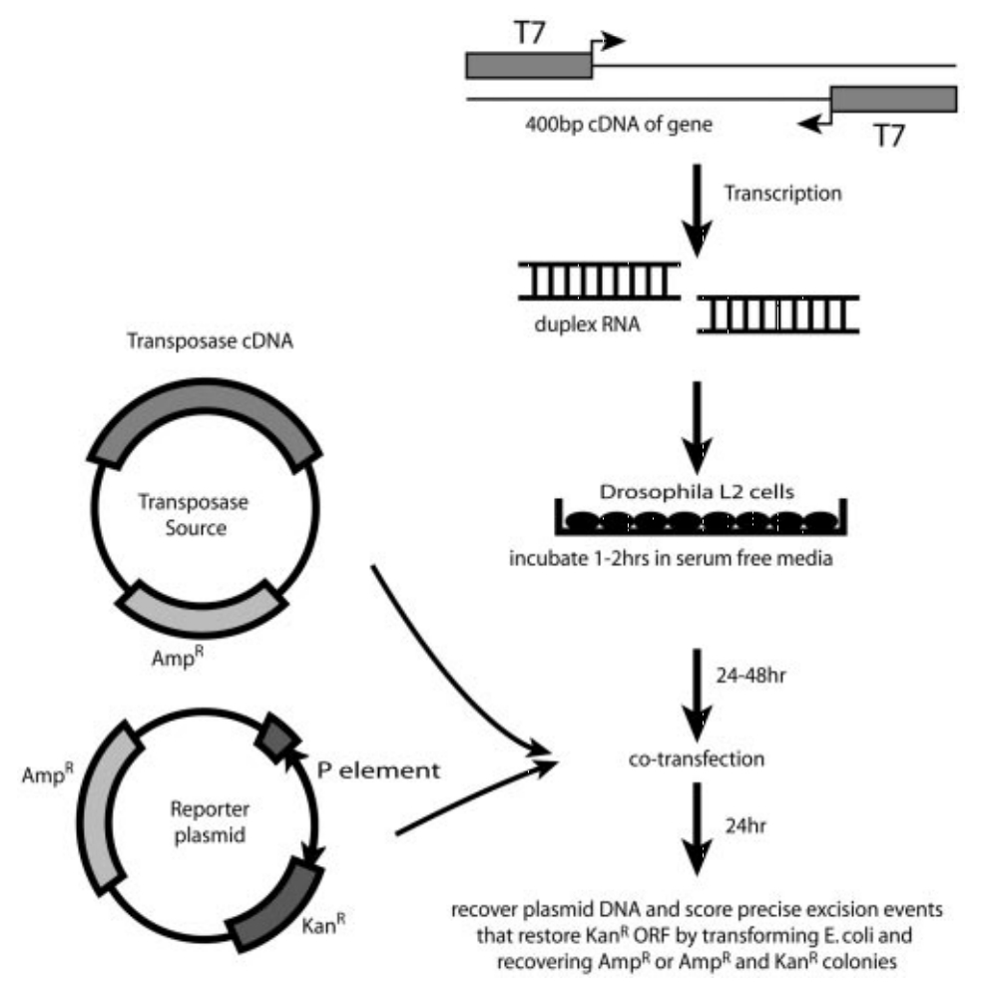

2016 Summer at University of California, Berkeley
Berkeley, CA
For the summer after my freshman year, I mainly worked on studying the P-element in Drosophila (fruit fly), which is a well-known transposable element – meaning this DNA sequence can have its position be changed in the genome. P-elements are mainly moved by a transposase, an enzyme that moves transposable elements via a cut-and-paste mechanism.
During the summer, I used various molecular laboratory techniques such as: in vivo Excision Assays, transfections, cell transformations, and more to explore and quantify the ability of transposase gene (THAP9) in different species: human, drosophila, and zebrafish transposase gene (THAP9 gene) to mobilize and move drosophila P-element.
During the summer, I used various molecular laboratory techniques such as: in vivo Excision Assays, transfections, cell transformations, and more to explore and quantify the ability of transposase gene (THAP9) in different species: human, drosophila, and zebrafish transposase gene (THAP9 gene) to mobilize and move drosophila P-element.

The experiment to quantity the ability of a THAP9 gene to mobilize a P-element was designed by having two plasmids: one with Ampicillin resistance gene and a transposase gene, the other with Ampicillin resistance gene and Kanamycin resistance gene. The Kanamycin resistance gene, however, was inactive because it was split into two sections because a P-element was interjected in the middle.
Later, these two plasmids were inserted into drosophila L2 cells via transformation. If the transposase enzyme successfully moved the P-element and the Kanamycin resistance gene was properly repaired, then the bacteria colonies formed by those drosophila L2 cells would be both Kanamycin and Ampicillin resistant! If the transposition/moving of the P-element was not successful, then the bacteria colonies would only be Ampicillin resistant. Due to this experimental design, I was able to quantify the ability of transposase gene belonging to different species to mobilize drosophila P-element.
Later, these two plasmids were inserted into drosophila L2 cells via transformation. If the transposase enzyme successfully moved the P-element and the Kanamycin resistance gene was properly repaired, then the bacteria colonies formed by those drosophila L2 cells would be both Kanamycin and Ampicillin resistant! If the transposition/moving of the P-element was not successful, then the bacteria colonies would only be Ampicillin resistant. Due to this experimental design, I was able to quantify the ability of transposase gene belonging to different species to mobilize drosophila P-element.
Figure: Min, B., Weinert, B. T. & Rio, D. C. Interplay between Drosophila Blooms syndrome helicase and Ku autoantigen during nonhomologous end joining repair of P element-induced DNA breaks. Proceedings of the National Academy of Sciences 101, 8906–8911 (2004).
University of California, Berkeley © Bailey Chen 2016